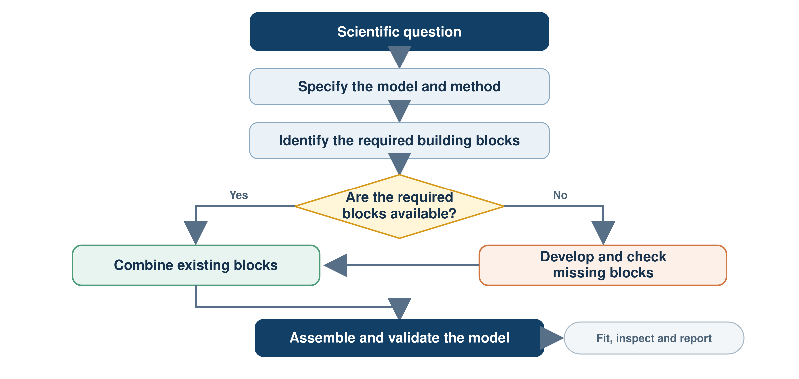
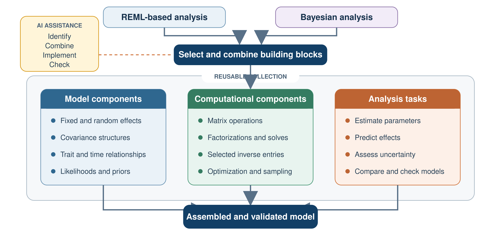
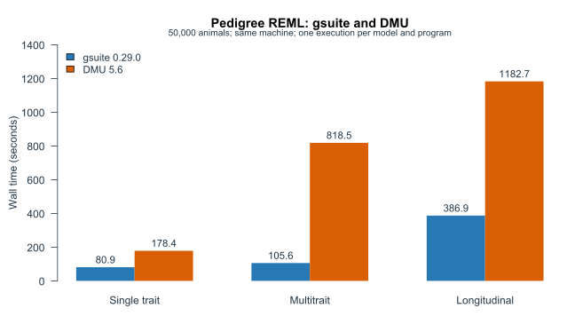

Center for Quantitative Genetics and Genomics, Aarhus University
| Term | Meaning |
|---|---|
| Artificial intelligence | The broad field of building systems that perform tasks associated with human intelligence |
| Machine learning and deep learning | Methods that learn patterns from data. Deep learning uses neural networks with many layers |
| Generative AI | Models that generate text, code, images, audio or other content |
| AI assistants and agents | Systems built around generative AI that can work with users, files and tools. Agents can carry out multistep tasks |
This presentation focuses on AI assistants and agents used for data analysis, method and software development, and teaching.
| Activity | Examples |
|---|---|
| Writing and communication | Draft, revise, translate and shorten text |
| Literature work | Find relevant papers, summarise them and compare their conclusions |
| Data analysis | Inspect data, write code, make figures and explain results |
| Teaching | Develop slides, exercises, examples and explanations |
| Administration | Prepare emails, meeting notes, plans and reports |
Writing and literature review are common entry points. The same technology can also contribute directly to mathematical, analytical and software work.
| Area | Example output | Reusable result |
|---|---|---|
| Data analysis | An analysis script and report | A reproducible analysis workflow |
| Method development | A statistical model or algorithm | A clearly defined method with validation evidence |
| Software development | R and C++ code, interfaces and documentation | Tested and maintainable software components |
| Teaching | Slides, simulations and worked examples | Editable teaching materials |
AI can help with mathematical reasoning, coding, analysis and documentation. Researchers set the scientific direction, review the decisions and determine what evidence is sufficient.
| Platform | Purpose |
|---|---|
| gsuite | Statistical models, numerical computation and user interfaces |
| gsim | Simulation of genetic data and assessment of methods |
| gact | Data integration, annotation, analysis and interpretation |
| gteach | Shared tools and materials for teaching |
AI has contributed to developing the platforms themselves. The resulting infrastructure can now support further work with AI assistants.
A concrete example of method and software development, from numerical algorithms to an R package.
The infrastructure exists. Connecting it with assistants for research is the next step.
| Layer | Components in and around gsuite |
|---|---|
| Numerical computation | Sparse solves and the inverse entries needed for model calculations |
| Native C++ and shared libraries | Solver interfaces, reuse of calculations and diagnostics |
| Reusable model components | Covariance models, estimation, prediction and computational tasks |
| R interface | Model specification and results through gfit() and gvc() |
The solver infrastructure uses established numerical libraries: CHOLMOD / SuiteSparse and PARDISO.

Each extension can add capabilities that other models can reuse.

Bayesian components illustrate an extension direction; current gsuite R support depends on the model and route.
AI assistance connects statistical ideas with their implementation.
| Check | Concrete example from the work |
|---|---|
| Small reference calculations | Compare the efficient selected inverse with dense and scalar references in C++ |
| Computational behaviour | Check factor reuse, thread agreement and retained solves |
| Independent software comparison | Compare matched pedigree models with DMU on 50,000 animals |
| User workflow | Fit models through R and inspect summaries, predictions and diagnostics |
In the saved DMU comparison, covariance estimates differed by less than \(4.3\times10^{-8}\).
Historical comparison: gsuite 0.29.0 and DMU 5.6; three frozen pedigree models. Results and scope

50,000 animals
Maximum covariance-estimate difference below \(4.3\times10^{-8}\).
Prediction correlations essentially 1 on 1,000 preselected animals.
Competitive runtime on these three tested models.
gsuite 0.29.0 and DMU 5.6. Each bar represents one execution. The work boundaries differ: gsuite fitting versus DMU preprocessing and fitting.
AI helped build the infrastructure. An assistant can now help researchers use and extend it.
How much genetic variation is present in body weight, and how accurately can breeding values be predicted?
An analysis may reveal a model or interface that gsuite does not yet support.
| Step | Work with the assistant |
|---|---|
| Identify the gap | State the missing capability and its statistical meaning |
| Reuse what exists | Inspect the model, covariance and solver components |
| Implement the extension | Add the required computation or interface |
| Establish support | Compare references, examine failures and document the limits |
Code that runs becomes a supported model only after its statistical meaning and numerical behaviour have been checked.
What needs to change now for the programme to remain scientifically distinctive as AI becomes part of research?
Computational and Statistical Genetics